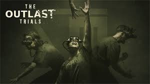

Inicie sesión para añadir el artículo a su carrito
Outlast
$39.990Descripción
En Outlast, encarnas a Miles Upshur, un periodista independiente que investiga el siniestro Mount Massive Asylum, un hospital psiquiátrico abandonado en las montañas de Colorado. Lo que comienza como una búsqueda de la verdad se convierte en una pesadilla de supervivencia, donde deberás esconderte, correr y usar tu cámara con visión nocturna para navegar por pasillos oscuros llenos de pacientes homicidas y secretos perturbadores. Este juego de horror en primera persona se destaca por su atmósfera intensa, mecánicas de sigilo y una narrativa que mezcla ciencia, religión y locura.